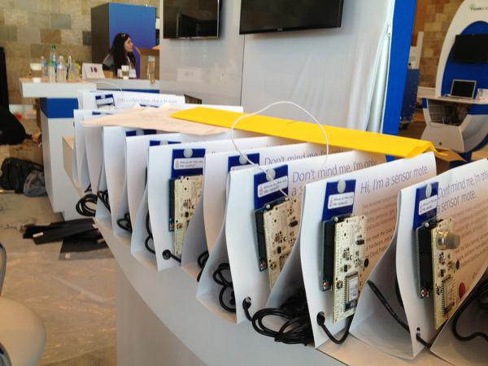
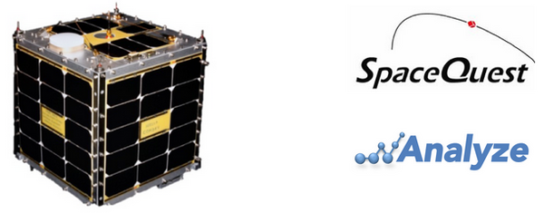
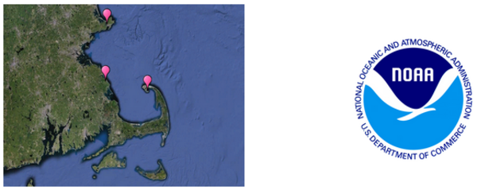
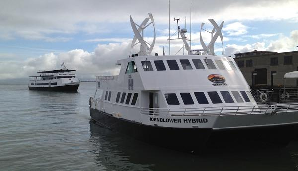

05.25.2013 21:58
Behind the scenes at Google IO
Google I/O was a totally insane
experience for me this year. I got a substantial amount of my sleep
for the week on mass transit or a bean bag in the speaker prep
area. I know a lot of the teams are working hard on sharing more of
the how it was done. I wanted to share a couple more images and
some more of what I've been up to now that I have had a chance to
sleep some.
First some general team news. I've moved offices this week. Before, I was sitting with the amazing imagery ingest team that handles bring in and processing all that amazing satellite and oblique imagery along with the terrain. I am still working with them, but I am now sitting with the Geo Outreach and Earth Engine Teams. For the first time since joining Google full time, I get to sit next to the other two full time Ocean team members. Woot! At Google, we do an amazing amount over VC, but there is nothing like just being around the team. We're never going to be able to get all the 20%ers who contribute to Oceans to be physically located in the same area. We're just too diverse a bunch.
And now, two pictures from IO. The first was the lineup outside Moscone West the day before the conference started. I was over from the SF office to do a "tech check" of the room. We tried out the slides on the actual projectors and made sure we were all comfortable with the on stage setup.
The cloud team was deploying hundreds of sensor datalogging notes throughout the three floors of the conference area. I've never seen so many sensor nodes before.
First some general team news. I've moved offices this week. Before, I was sitting with the amazing imagery ingest team that handles bring in and processing all that amazing satellite and oblique imagery along with the terrain. I am still working with them, but I am now sitting with the Geo Outreach and Earth Engine Teams. For the first time since joining Google full time, I get to sit next to the other two full time Ocean team members. Woot! At Google, we do an amazing amount over VC, but there is nothing like just being around the team. We're never going to be able to get all the 20%ers who contribute to Oceans to be physically located in the same area. We're just too diverse a bunch.
And now, two pictures from IO. The first was the lineup outside Moscone West the day before the conference started. I was over from the SF office to do a "tech check" of the room. We tried out the slides on the actual projectors and made sure we were all comfortable with the on stage setup.
The cloud team was deploying hundreds of sensor datalogging notes throughout the three floors of the conference area. I've never seen so many sensor nodes before.

05.21.2013 10:44
Processing and visualizing {ship/sensor} data - the matched set
In case it wasn't clear, I'd like to
re-iterate: These talks are not meant to be about ships. We want to
you to think about YOUR data when watching these videos. If your
data is AIS, then that's a lucky match, but we don't expect it. We
want YOU to go forth, process lots of data and build amazing
visualizations and analyitics systems that meet your needs (be they
local or global). We think that AIS ship tracking makes a great
example use case with many interesting stories that can be told
with the data that give us chances to demonstrate techniques and
strategies.
Brendan Kenny: "Google I/O 2013 - Google Maps + HTML5 + Spatial Data Visualization: A Love Story"
Francesc Campoy, Kurt Schwehr and Mano Marks: "Google I/O 2013 - All the Ships in the World: Visualizing Data with Google Cloud and Maps"
Jenifer Austin Folkes - Google I/O 2013 - Dive Into Underwater Street View
Amy Unruh and Kim Cameron: "Behind the Data Sensing Lab - Gathering, Processing and Analyzing Data at Scale using the Google Cloud Platform"
Brendan Kenny: "Google I/O 2013 - Google Maps + HTML5 + Spatial Data Visualization: A Love Story"
Francesc Campoy, Kurt Schwehr and Mano Marks: "Google I/O 2013 - All the Ships in the World: Visualizing Data with Google Cloud and Maps"
Jenifer Austin Folkes - Google I/O 2013 - Dive Into Underwater Street View
Amy Unruh and Kim Cameron: "Behind the Data Sensing Lab - Gathering, Processing and Analyzing Data at Scale using the Google Cloud Platform"
05.18.2013 13:22
Cat nap
Cleaning out the email this morning,
I ran into older images from our web cam. The rough life of our
cat... we'd had him for 8 months at this point. Terrible quality
with this webcam, but it was cheap and uses wifi.
05.17.2013 13:24
All the ships in the world at Google I/O
We are still in the process of
getting the talk videos out, but here is a start. I'll flush out
this list as the related videos are published.
Google I/O 2013 - All the Ships in the World: Visualizing Data with Google Cloud and Maps
Google Cloud Platform - Google App Engine, Google Compute Engine, Google Cloud Storage, Google BigQuery, Google Cloud SQL and our many APIs (Maps, Terrain and many more).
Related Maps:
SpaceQuest / Analyze
NOAA Stellwagen Bank National Marine Sanctuary (SBNMS)
Google I/O 2013 - All the Ships in the World: Visualizing Data with Google Cloud and Maps
Google Cloud Platform - Google App Engine, Google Compute Engine, Google Cloud Storage, Google BigQuery, Google Cloud SQL and our many APIs (Maps, Terrain and many more).
Related Maps:
- Google I/O 2013 - Google Maps + HTML5 + Spatial Data Visualization: A Love Story [Google Maps + HTML5 + Spatial Data Visualization: A Love Story]
- Google I/O 2013: Re-Imagining the Map (short 2 minute video)
- Google I/O 2013 - Dive Into Underwater Street View
- Google I/O 2013 - Fireside Chat with the Google Maps Team
- Google Maps Developers Live: Ships, Polylines, Symbols, Oh My! [6 months before Google I/O 2013]
- Google I/O 2013 - Project Ground Truth: Accurate Maps Via Algorithms and Elbow Grease
- Google I/O 2013 - Design Patterns for Maps - Architecture
- Google I/O 2013 - Design Principles for Maps
- Google Developers Live at I/O 2013 - Maps Developer Sandbox
- Google I/O 2013 - Making Location Meaningful with the Google Maps APIs
- Google I/O 2013 - Behind Data Sensing Lab - Gathering, Processing, Analyzing Data using Google Cloud
- Google Developers Live at I/O 2013 - Cloud
- Google I/O 2013 - Importing Large Data Sets into Google Cloud Storage
- Google I/O 2013 - Supercharge Your Google Compute Engine App with Persistent Disk
- Google I/O 2013 - Google Cloud Messaging
SpaceQuest / Analyze

NOAA Stellwagen Bank National Marine Sanctuary (SBNMS)

05.15.2013 17:01
Tug and barge going under the SF Bay Bridge
Our talks on ships at Google I/O are
tomorrow.
05.15.2013 14:32
Google API python client for fink on Mac OSX
To go with Google I/O and our Cloud
Infrastructure talk "All the ships in the world," I've added
oauth2client, uritemplate, gflags, and google-api-python-client to
fink on Mac OSX 10.7/10.8. This lets you use OAuth2 to access
Google REST APIs.
For example:
You can now install bigquery and gsutil (Google Cloud Storage) tools from fink.
For example:
from apiclient.discovery import build
import apiclient.errors
from oauth2client.client import flow_from_clientsecrets
from oauth2client.file import Storage
from oauth2client.tools import run
storage = Storage('taskqueue_oauth.dat')
credentials = storage.get()
if not credentials or credentials.invalid:
flow = flow_from_clientsecrets('client_secrets.json',
scope='https://www.googleapis.com/auth/taskqueue',
message='can not find client secrets')
credentials = run(flow, storage)
http = credentials.authorize(httplib2.Http())
service = build('taskqueue', 'v1beta2', http=http)
tasks = service.tasks()
print tasks.list(project='s~my-appeng-project', taskqueue='myqueue')
You can now install bigquery and gsutil (Google Cloud Storage) tools from fink.
fink selfupdate fink install bigquery-py27 gsutil-py27There were a number of packages that I had to add to fink behind the scenes and I updated boto.
fink list -i oauth2client gsutil bigquery crcmod google-api-python boto socksipy google-apputil uritemplate i bigquery-py27 2.0.12-1 BigQuery database access i boto-py27 2.9.2-1 Python interface to Amazon Web Services i crcmod-py27 1.7-1 Cyclic Redundancy Check i google-api-python-clie 1.1-2 Access Google APIs via oauth2 and discovery i google-apputils-py27 0.3.0-1 Google command line utility helpers i gsutil-py27 3.29-2 Google cloud storage access i oauth2client-py27 1.1-1 Client library for OAuth 2.0 i socksipy-py27 1.02-1 TCP interface to SOCKS4, SOCKS5 or HTTP proxy i uritemplate-py27 0.5.2-1 RFC6570 up to level 4 /sw/bin/bq version This is BigQuery CLI v2.0.12 /sw/bin/gsutil version gsutil version 3.29
05.14.2013 19:09
SF Fire Boat
The San Francisco fire department has
their fire boat parked right in front of the Google SF offices. I
had to wait for afternoon light, so I could capture a decent
image.
05.14.2013 15:18
Pre-Google I/O ships - Hornblower hybrid ferry
I don't know anything about the
effeciency of these hybrids, but they have an interesting look with
their wind and solar power setups. This image is from a trip
several of us made to Angel Island and Alcatraz last month.

05.14.2013 12:12
Google I/O this week
I've been doing a photo stream of
ships in leadup for Google I/O this week. My blog takes
substantially longer to post to than to just use G+, so I've
neglected the blog. I'll try to catch up today.
Here is a picture from the 6th floor of the Google SF office of a small work boat heading under the SF Bay Bridge. I snapped this picture when I got to the office, but it's too bright to work near the windows with the morning light reflecting off the bay.
Here is a picture from the 6th floor of the Google SF office of a small work boat heading under the SF Bay Bridge. I snapped this picture when I got to the office, but it's too bright to work near the windows with the morning light reflecting off the bay.
05.05.2013 09:32
Pilots taking ships through the great barrier reef
Via
GeoGarage, this is a pretty good article about pilots taking
ships through tough areas. Pilots or no-pilots, accidents do
happen.
05.04.2013 20:16
Oceans at Google I/O 2013
If you've wondered why my blogging
has decrease for the last while, here is one of several of the
reasons. I've been working hard on material for Google I/O. I am
super excited that we will be sharing examples of how to work with
geospatial ocean data at Google IO. We built some demonstrations
using AIS data show of quite a few of the cloud services that
Google offers. I look forward to hearing how the community uses
these features and what kinds of data they are working with!
Not going to be at the conference? Check out Google I/O Extended events worldwide
Not going to be at the conference? Check out Google I/O Extended events worldwide
- Day 1 - Mano Marks, Luke Mahe: The Other Mobile Mapping Platform: Getting Your Maps into iOS
- Day 2 - Brendan Kenny Google Maps + HTML5 + Spatial Data Visualization: A Love Story
- Day 2 - Francesc Campoy Flores, Mano Marks, and Kurt Schwehr: All the Ships in the World: Visualizing Data with Google Cloud and Maps
- Day 2 - Jenifer Austin Foulkes: Dive Into Underwater Street View
- Day 2 - Avnish Bhatnagar: Off the Grid: Going Offline with Maps and Earth